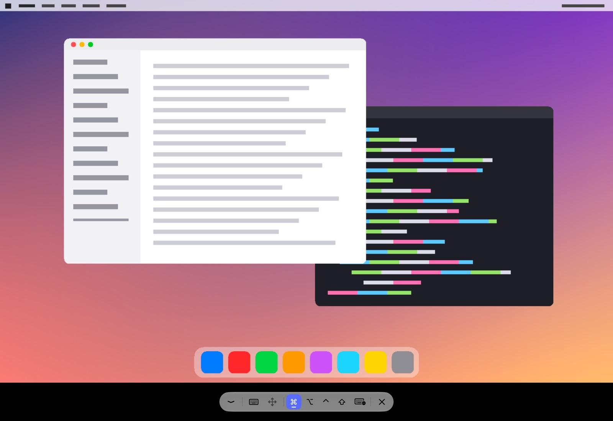
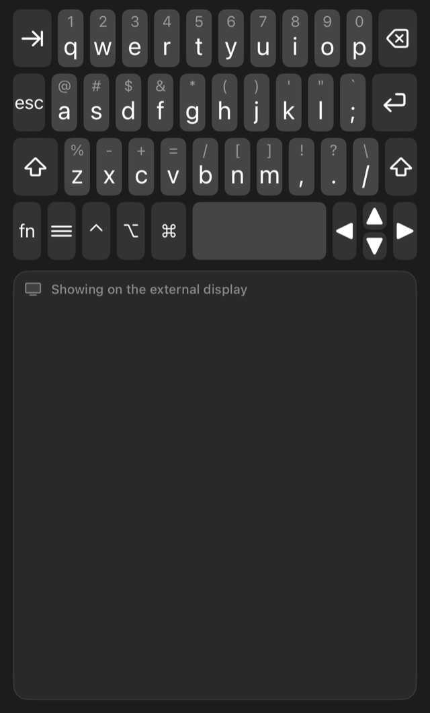

One tap from your Home Screen, your Mac on the TV, and a real keyboard on iPhone Duo.
Add the Vantage widget and your computers are one tap away. Each shows its route and when you last used it.
AirPlay to a TV, or plug in a display, and the Mac's desktop fills it. Your iPhone or iPad becomes its keyboard and trackpad.


Half-fold your iPhone Duo and get four rows of big keys and a wide trackpad, no toolbar in the way.

Drag computers in the library wherever you like. Recently Used is one tap away.
Rest your finger a moment before a drag starts, so a stray swipe never moves a window.
With a mouse or trackpad, right- and middle-button drags work just like on the Mac.
Vantage is in a small private beta on TestFlight. Send a note and you'll get an invite.